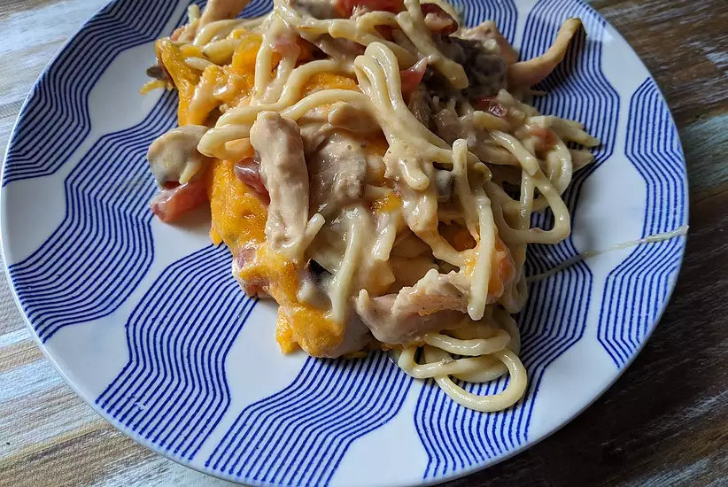

Chicken Spaghetti Bake

Ingredients
- 1 (16 ounce) package spaghetti
- 3 (12.5 fl oz) cans chicken chunks, drained
- 1 (10.75 ounce) can condensed cream of mushroom soup
- 1 (10.75 ounce) can condensed cream of chicken soup
- 4 cups shredded Cheddar cheese
steps
- Preheat oven to 350 degrees F (175 degrees C).
- Bring a large pot of lightly salted water to a boil. Cook spaghetti in the boiling water, stirring occasionally until cooked through but firm to the bite, about 12 minutes. Drain and transfer pasta to a large bowl.
- Mix chicken, cream of mushroom soup, and cream of chicken soup into spaghetti. Transfer mixture to a 9x13-inch baking dish and top with Cheddar cheese
- Bake in preheated oven until cheese is melted and sauce is bubbly, about 30 minutes.
Back to Home